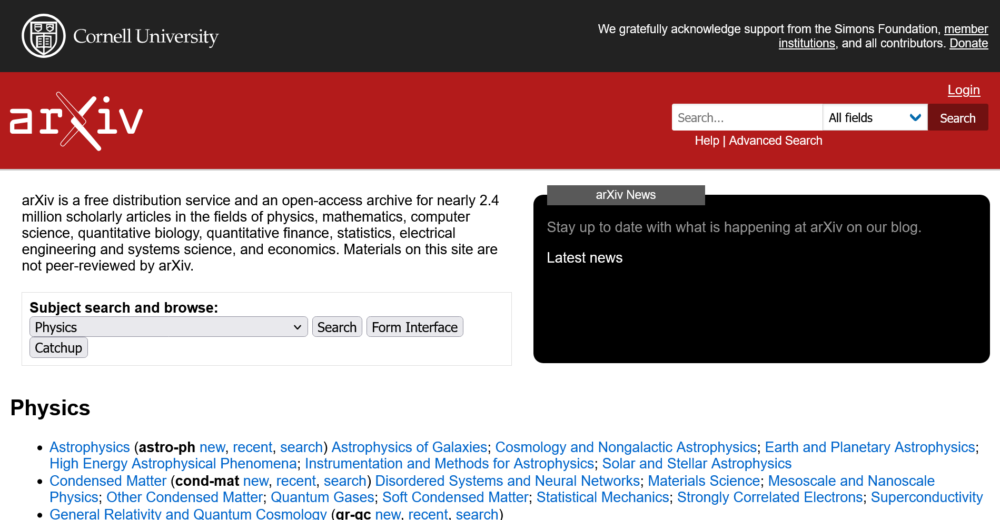
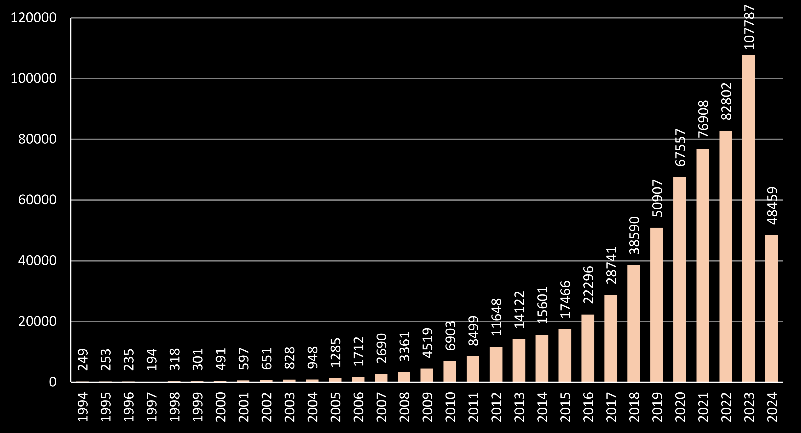

Digital Historical Unessay Proposal
Jirawut Thongraar
What?
Machine Learning and AI have made substantial progress in the past decade
Had it impacted research topics in CS and related fields?
Where?
arXiv.org paper titles and abstracts

How?
Analyze keywords in titles and abstracts over time

Graph of arXiv papers submitted under "cs" category
Why?
- Why use arXiv.org ▶ dataset is easily availiable
- Why not fulltext dataset ▶ fulltext is 2.7 TB 😱 (maybe for future works?)
- Why analyze keywords ▶ I don't want to read 100000+ papers! So a more automated methodology is preferred
Why not?
- arXiv.org may not be representative of CS research at large
- Analyzing keywords may may not give as much insight as reading the full text
What outcome?
- Make the tools that I used availiable
- Answer the question through graphs and other data visualizations
Extra: Tools and software
- Dataset from Kaggle
- Data analysis in Rust (programming language) + Polar library
- Data visualization and tools in HTML+JavaScript (Planned)
Extra: Progress so far
- Dataset is in a "ready" state
- The dataset is processed into Apache Parquet format (~1.1 GB)
- Can query for whatever specific information using Rust code
- Data visualization tools currently only has empty template
- Expected progress:
- Most of the data analysis and visualization done within May
- Cleanup into a useful format done for submission in June